에스텍 그룹 · 사용자 매뉴얼
S-Tec Complaint Response System
사용자 매뉴얼
고객사 Complaint 대응 프로그램 사용 방법 · v1.5.0 · 2026.11.15(일)
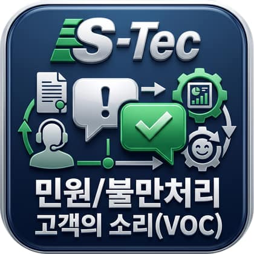
□ 목차 1. 프로그램 소개 2. 설치와 접속 3. 로그인 4. 처음 실행 — Complaint 담당 지정 5. 상단 기능 6. ① 발생 사업장 선정 7. ② Complaint 분류 (대·중·소) 8. 공문·메일·카톡으로 받은 Complaint 불러오기 9. ③ Complaint 내용 작성 10. ④ 대응방안 검토 · 출력 11. 메인 화면 사례 영상 12. ⑤ 근무자 조치 문서 13. 출력 기록 관리 14. 다운로드 QR · 친구 추천 · 화면 15. 자주 묻는 질문 |
1. 프로그램 소개
고객사가 제기한 Complaint를 ① 사업장 선정 → ② 대·중·소 분류 → ③ 내용 작성 → ④ 출력 순서로 처리하면 대응방안 문서를 자동으로 만들어 줍니다.
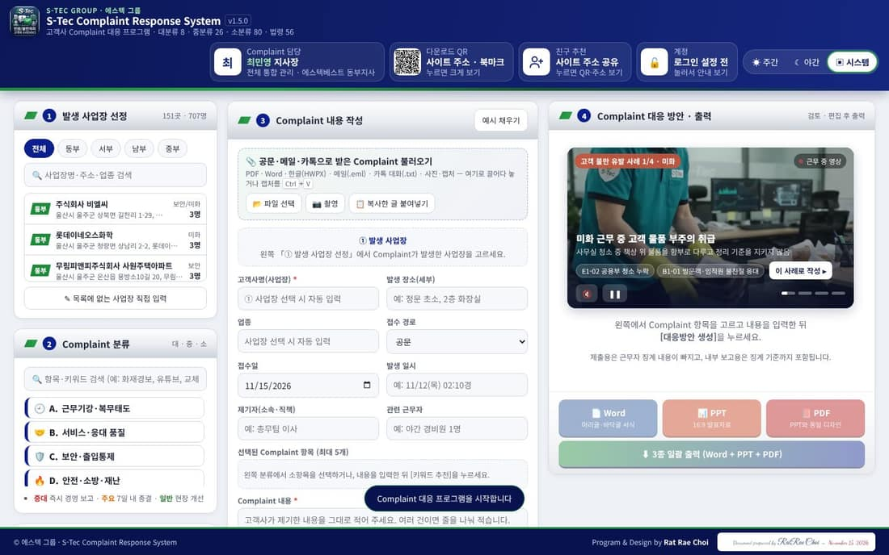
▲ 메인 화면 — 왼쪽 ①·② / 가운데 ③ / 오른쪽 ④·⑤
○ 고객사 대응자료 3종: Word(에스텍 머리글·바닥글 서식) · PPT(16:9) · PDF(PPT와 같은 디자인)
○ 근무자 조치 문서 3종: 근무자 조치 계획서 Word · PPT · PDF (내부 · 대외비)
○ Complaint 분류 대분류 8 · 중분류 26 · 소분류 80, 관련 법령 56개 조항
○ 에스텍베스트 동부·서부·남부·중부 사업장 151곳 목록 · 카카오맵 위치
○ 현장 사진·근무 영상을 대응자료에 자동으로 넣음 (PPT에는 영상 재생)
○ 공문·메일·카톡·사진 파일을 올리면 ③ 작성 칸 자동 입력 · 원문은 「붙임」으로 첨부
○ 메인 화면에서 고객 불만 유발 사례 영상 4편 자동 재생
2. 설치와 접속
웹 주소, PC 앱, 안드로이드 앱 세 가지 방법으로 씁니다. 세 방법 모두 같은 아이디로 로그인합니다.
방법 | 설치 · 접속 | 비고 |
|---|---|---|
웹 주소 | https://sadness500-boop.github.io/S-Tec-Complaint-Response-System/ | 즐겨찾기(Ctrl+D) 권장 |
PC 앱 | 크롬으로 웹 주소 열기 → 오른쪽 위 ⋮ → 전송, 저장, 공유 → 페이지를 앱으로 설치 | 바탕화면에 아이콘 생성 |
안드로이드 앱 | 상단 「다운로드 QR」 → 안드로이드 앱(APK) QR을 휴대폰으로 찍기 → 설치 | 「출처를 알 수 없는 앱」 허용 |
아이폰 | 사파리로 웹 주소 열기 → 공유 → 홈 화면에 추가 |
💡 PC 앱 아이콘이 예전 그림으로 보이면: 설치된 앱을 한 번 열어 두면 크롬이 새 아이콘으로 바꿉니다. 그래도 그대로면 앱을 제거(앱 창 ⋮ → 제거)한 뒤 다시 설치하세요. |
3. 로그인
에스텍 통합 로그인 — 근태관리 등 에스텍 프로그램과 같은 아이디를 씁니다.
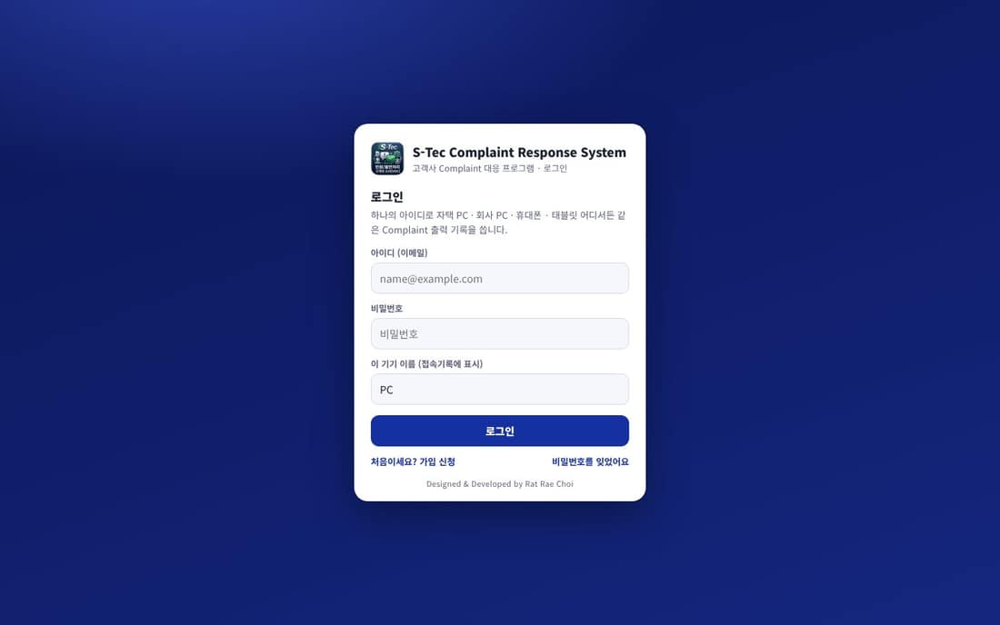
▲ 로그인 화면
▶ 순서
1. 처음이면 「가입 신청」 → 이메일·비밀번호·성명·연락처·소속 입력
2. 제작자(관리자)가 가입을 승인하고 이 프로그램 사용 권한을 주면 사용 가능
3. 아이디(이메일)·비밀번호 입력 → 「이 기기 이름」(예: 회사 PC) 확인 → 로그인
4. 비밀번호를 잊으면 「비밀번호를 잊었어요」 → 메일로 재설정, 또는 제작자에게 임시 비밀번호 요청
💡 「이 프로그램 사용 권한이 없습니다」 화면이 나오면 계정은 승인됐지만 Complaint 프로그램 권한이 아직 없는 것입니다. 제작자에게 「프로그램별 권한」을 요청하세요. |
4. 처음 실행 — Complaint 담당 지정
Complaint 담당이 지정되어야 프로그램이 열립니다(근태관리의 근태 담당과 같은 방식).
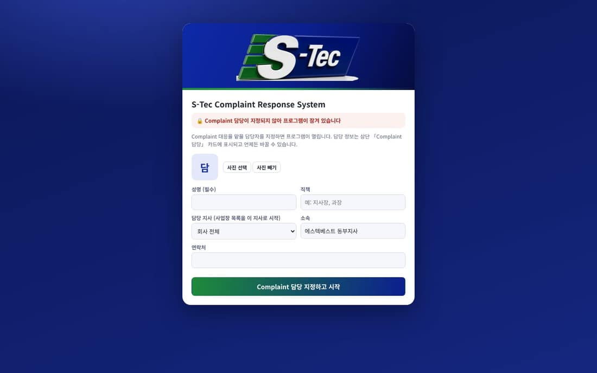
▲ Complaint 담당 지정 화면
▶ 순서
1. 사진(선택) · 성명(필수) · 직책 입력
2. 담당 지사 선택 — 사업장 목록이 이 지사로 시작합니다(회사 전체도 가능)
3. 소속 · 연락처 입력 후 「Complaint 담당 지정하고 시작」
○ 담당자 성명·직책·소속은 출력 문서의 작성자·작성 부서에 자동으로 들어갑니다
○ 담당 정보는 상단 「Complaint 담당」 카드를 눌러 언제든 바꿉니다
5. 상단 기능
근태관리 프로그램과 같은 상단 카드입니다.
▲ 상단 카드
카드 | 기능 |
|---|---|
Complaint 담당 | 담당자 사진·성명·지사 표시, 눌러서 변경·해제 |
다운로드 QR | 웹 주소 / 안드로이드 앱(APK) QR — 휴대폰 카메라로 찍으면 바로 열림 |
친구 추천 | QR · 사이트 주소 · 추천 메시지를 복사해 카카오톡·문자로 보내기 |
내 계정 | 로그인 정보, 동기화, 비밀번호 변경, 로그아웃 (관리자는 관리자 페이지) |
☀ 주간 · ☾ 야간 · ▣ 시스템 | 화면 밝기 — 시스템은 PC·휴대폰 설정을 따름 |
6. ① 발생 사업장 선정
Complaint가 발생한 사업장을 고르면 고객사명·업종이 자동으로 채워지고, 출력물에 사업장 정보가 들어갑니다.
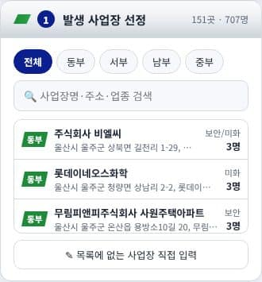
▲ ① 발생 사업장 선정
▶ 순서
1. 지사 버튼(전체·동부·서부·남부·중부)으로 좁히기
2. 검색창에 사업장명·주소·업종 입력
3. 목록에서 사업장 선택 → 가운데 위쪽에 사업장 정보(주소·계약일·인원 등) 표시
4. ② 분류 아래 카카오맵에 사업장 위치 — 지도의 점을 눌러도 선택, 「길찾기」로 카카오맵 열기
5. 목록에 없으면 「목록에 없는 사업장 직접 입력」
💡 카카오맵은 웹 주소와 안드로이드 앱에서 보입니다. PC에 내려받은 HTML 파일로 열면 지도 대신 「카카오맵에서 열기」 바로가기가 나옵니다. 관리 범위(담당 지사)가 지정된 사용자는 그 지사 사업장만 보입니다. |
7. ② Complaint 분류 (대·중·소)
소분류(Complaint 항목)를 최대 5개까지 고릅니다. 고른 항목의 대응 기준·법령이 자동으로 적용됩니다.
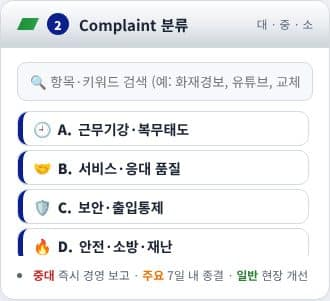
▲ Complaint 분류 트리
○ 대분류 8: 근무기강 · 서비스·응대 · 보안·출입통제 · 안전·소방 · 미화·위생 · 주차·시설 · 인력운영·계약 · 노무·법률
○ 심각도: 중대(즉시 경영 보고) · 주요(7일 내 종결) · 일반(현장 개선)
○ 검색창에 화재경보·유튜브·교체 등 낱말을 넣으면 해당 항목만 표시
○ ③ 내용을 먼저 쓰고 「내용으로 항목 키워드 추천」을 눌러도 항목을 추천받습니다
○ 분류 목록은 첫 화면 안에 보이며, 칸 안에서 위아래로 넘겨 고릅니다
8. 공문·메일·카톡으로 받은 Complaint 불러오기
고객사가 공문·메일·카톡으로 보낸 Complaint를 파일로 올리면 내용을 읽어 ③ 작성 칸을 자동으로 채웁니다.
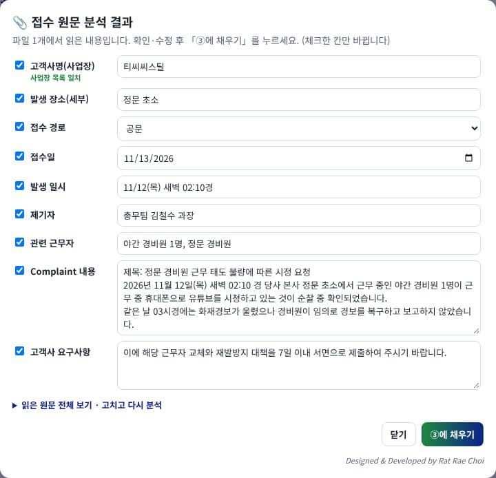
▲ 분석 결과 확인 창 — 체크한 칸만 ③에 채워짐
▶ 순서
1. ③ 맨 위 「📎 Complaint 불러오기」에서 「파일 선택」, 또는 파일을 끌어다 놓기
2. 카톡·공문 화면은 캡처 후 프로그램 화면에서 Ctrl+V, 휴대폰은 「📷 촬영」
3. 메일·카톡 글은 복사 후 「📋 복사한 글 붙여넣기」
4. 확인 창에서 틀린 칸을 고치고 「③에 채우기」 → 사업장·Complaint 항목 자동 선택
받은 형태 | 올릴 파일 |
|---|---|
공문 | PDF(스캔본도 가능) · Word(.docx) · 한글(.hwpx) |
메일 | .eml 파일 (첨부 PDF·사진도 함께 읽음) 또는 본문 복사 |
카톡 | 「대화 내보내기」 .txt 또는 대화 캡처 사진 |
사진 | 공문·현장 사진 — 사진 속 한국어 글자를 읽음 |
💡 한글 .hwp는 「PDF로 저장」 또는 「HWPX로 저장」 후, Outlook .msg는 .eml로 저장 후 올리세요. 사진 글자 읽기는 일부 틀릴 수 있으니 확인 창에서 꼭 확인하세요. 파일은 이 기기 안에서만 읽고 밖으로 보내지 않습니다. 원문은 Word 끝과 PPT에 「붙임 · 고객사 접수 원문」으로 들어갑니다(파일 이름 옆 체크를 풀면 제외). |
9. ③ Complaint 내용 작성
고객사가 말한 내용을 그대로 적고, 확인된 사실을 한 줄씩 적습니다.
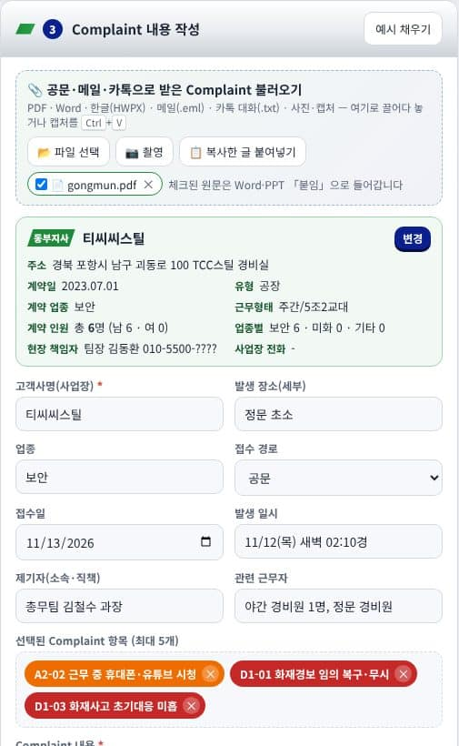
▲ 내용 작성 화면
항목 | 쓰는 법 |
|---|---|
발생 장소(세부) | 정문 초소, 2층 화장실 등 |
접수일 · 발생 일시 · 접수 경로 | 접수일 기준으로 D+0~D+30 일정 자동 계산 |
제기자 · 관련 근무자 | 회신문·근무자 조치 문서에 사용 |
Complaint 내용 (필수) | 여러 건이면 줄을 나눠 적기 |
고객사 요구사항 | 교체 요구, 서면 제출 기한 등 |
확인된 사실관계 | CCTV·근무일지·경위서로 확인된 사실 — 비우면 확인 항목 자동 기재 |
심각도 | 자동 판정(선택 항목 중 가장 높은 단계) 또는 직접 선택 |
문서 용도 | 고객사 제출용(징계 내용 제외) / 내부 보고용(근무자 조치 기준 포함) |
10. ④ 대응방안 검토 · 출력
「대응방안 생성」을 누르면 오른쪽에 초안이 나옵니다. 고친 내용이 그대로 출력됩니다.
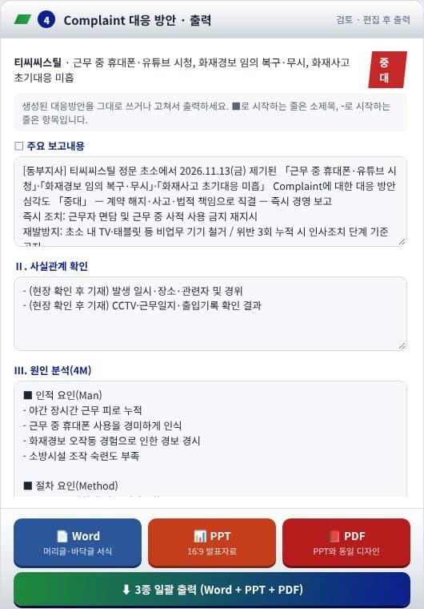
▲ 대응방안 편집 · 출력 버튼
○ ■ 로 시작하는 줄 = 소제목, - 로 시작하는 줄 = 항목
○ 주요 보고내용 · 사실관계 · 원인 분석(4M) · 즉시 조치 · 단기 개선 · 재발방지 · 고객사 약속 · 회신(안) 편집
○ 법적 검토에 넣을 법령을 체크로 선택
○ Word · PPT · PDF 단추 또는 「3종 일괄 출력」 — 휴대폰 앱은 저장·보내기 창
💡 PPT·PDF 표지에는 앱 아이콘(VOC)과 현장 피규어가, 본문에는 「현장 재교육」 근무 영상이 들어갑니다(PPT에서 재생, PDF·Word는 대표 장면). 영상은 웹 주소·앱에서 만들 때 함께 들어갑니다. v1.4.1부터 PowerPoint에서 「복구」 창 없이 바로 열립니다. |
11. 메인 화면 사례 영상
④ 칸에는 대응방안을 만들기 전까지 고객 불만을 부르는 근무 사례 영상 4편이 차례로 재생됩니다(바뀔 때 모자이크 전환).
▲ 고객 불만 유발 사례 영상
○ 사례: 미화 물품 부주의 · 방문객 고압 응대 · 상황실 졸음 · 상황실 유튜브 시청
○ 「이 사례로 작성 ▸」 — 그 사례의 Complaint 항목을 ② 분류에 바로 선택
○ 🔇/🔊 소리, ❚❚ 일시정지, 아래 막대를 눌러 원하는 영상으로 이동
○ 「대응방안 생성」을 누르면 이 자리가 편집 화면으로 바뀝니다
12. ⑤ 근무자 조치 문서
Complaint를 초래한 당사 근무자에 대한 「근무자 조치 계획서」를 고객사 대응자료와 따로 만듭니다(내부 · 대외비).
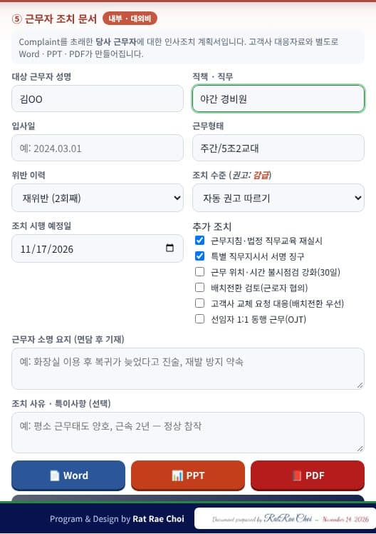
▲ 근무자 조치 입력
▶ 순서
1. 대상 근무자 성명 · 직책 · 입사일 · 근무형태 입력
2. 위반 이력 선택(초범 / 재위반 / 3회 이상) → 조치 수준이 자동 권고됨
3. 필요하면 조치 수준을 직접 선택, 시행 예정일·추가 조치 체크
4. 면담 후 근무자 소명 요지·조치 사유 기재 → Word · PPT · PDF 출력
단계 | 조치 |
|---|---|
0 | 징계 없음 — 교육·보호 |
1 | 구두 주의 — 현장 교육 |
2 | 서면 경고 — 시말서 징구 |
3 | 감급 — 근기법 제95조 한도 |
4 | 정직 — 징계위원회 의결 |
5 | 해고 검토 — 징계위원회·서면통지 |
💡 문서에는 위반 사실·근거, 양정 검토, 결재란, 진행 절차(D+0~D+30), 법적 유의사항, 붙임 경위서·확인서(재발방지 서약) 양식이 들어갑니다. 고객사 교체 요구만으로는 해고할 수 없습니다. |
13. 출력 기록 관리
출력할 때마다 기록이 남습니다. 로그인하면 다른 기기에서도 같은 기록이 보입니다.
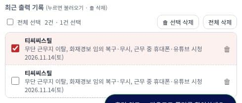
▲ 최근 출력 기록
○ 기록을 누르면 사업장·항목·내용을 그대로 불러옴 → 「대응방안 생성」
○ 🗑 한 건 삭제 · 체크 후 「선택 삭제」 · 「전체 삭제」 (삭제 전 확인 창)
○ 삭제한 기록은 되살릴 수 없습니다
14. 다운로드 QR · 친구 추천 · 화면
동료에게 프로그램을 알려 주고, 휴대폰에서도 같은 아이디로 씁니다.
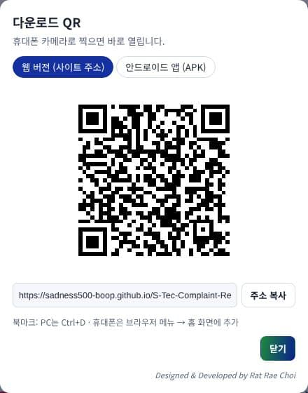
▲ 다운로드 QR
○ 다운로드 QR: 웹 버전 / 안드로이드 앱(APK) 탭
○ 친구 추천: QR · 주소 · 추천 메시지(담당자 이름 포함) 복사
○ 주간·야간·시스템 화면 전환 — 야간 화면은 어두운 곳에서 눈이 편함
○ 휴대폰 앱에서 출력하면 「저장·보내기」 창 — 파일 저장, 카카오톡·메일 전송
15. 자주 묻는 질문
문제가 생기면 먼저 아래를 확인하세요.
증상 | 해결 |
|---|---|
이 프로그램 사용 권한이 없습니다 | 제작자에게 프로그램별 권한(Complaint 대응) 요청 → 「다시 확인」 |
승인 대기 중 | 제작자가 가입 승인을 해야 합니다 |
지도가 안 보임 | 웹 주소·앱으로 접속 / 인터넷 연결 확인 |
PPT에 영상이 없음 | PC에 내려받은 HTML이 아니라 웹 주소·앱에서 출력 |
PC 앱 아이콘이 예전 그림 | 앱을 한 번 실행 → 그래도 같으면 앱 제거 후 다시 설치 |
PPT를 열면 「복구」 창이 나옴 | 예전(v1.4.0 이전) 파일입니다 — 지금 버전에서 다시 출력 |
한글(.hwp)·Outlook(.msg)이 안 읽힘 | PDF·HWPX·.eml로 저장해 올리거나 캡처·복사해 붙여넣기 |
사진에서 읽은 글자가 일부 틀림 | 확인 창에서 고친 뒤 채우기 — 원문 전체 보기에서 고치고 「다시 분석」 |
Word 글꼴이 다름 | 맑은 고딕이 설치된 PC에서 열기 |
- 끝 - S-Tec Complaint Response System v1.5.0 · Designed & Developed by Rat Rae Choi